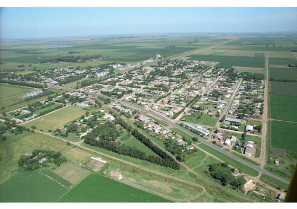
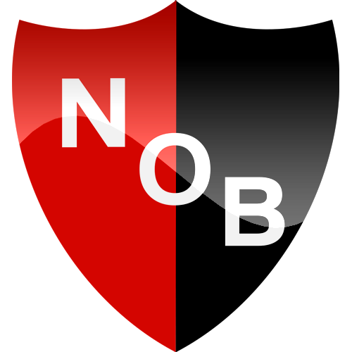
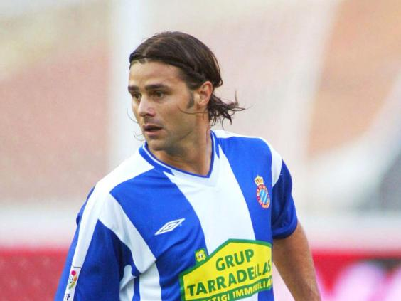
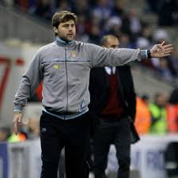

Early Days
- Mauricio Pochettino was born in a small town called Murphy, a few hours outside Rosaria in central Argentina.
- One winters night, Marcelo Beisla, an ambitious young coach of Newell Old Boys came knocking. The pair had attended a nearby youth tournament and had been tipped off about a promising player who was unable to attend. After taking a look at the young Mauricio, "They are the legs of a footballer!" Beisla exlaimed...(not wierd at all right?)
- Beisla signed Pochettino there and then!
Newells Old Boys
- Pochettino made his debut in 1988, and remained with Newells Old Boys for 6 years.
- During his time at Newells, they won 2 domestic titles, and reached the final of the prestigious Copa Libadetores.
- Pochettino made over 150 appearances for Newell's, before signing for the Spanish club Espanyol.


The Sheriff of Murphy
- Pochettino (aged 22) joined Espanyol in 1994.
- Pochettino would go on to make over 300 appearances, in 2 spells at Espanyol, becoming a club legend.
- Pochettino and Beisla were reunited soon after at Espanyol, with Beisla initially serving up some tough love,
telling Mauricio that his last season "had been shit", and if he played like that again,
Pochettino would never play in Beisla's team, and never play for Argentina!
Pochettino drove home in tears, but the harsh words inspired him. - Inbetween his stints at Espanyol, Pochettino spent four years plying his trade in France, for PSG & Bordeaux.
- It was in France, that Pochettino first decided he would like to be a coach one day.
Early Coaching Success
- In January 2009, Pochettino's beloved Espanyol were in bad shape, heading towards relegation,
and having already sacked 2 coaches that season. Pochettino put his hand up for the role, and was handed
the task of saving Espanyol, despite having minimal experience.
After only 2 training sessions, Pochettino took the reins in his first competetive match as manager, an impressive nil-nil draw against Pep Guardiola's Barcelona. - Espanyol had 10 games remaining, and were a whopping 8 points from safety. Mauricio Pochettino make a 30 mile pilgrimage to the Montserrat, and asked for divine intervention from the Virgin Mary.
- Espanyol won 8 of their last 10 games, to avoid relegation. A Miracle!
- Pochettino managed Espanyol for 3 more seasons, and had transformed them into a prototype of the hard running, pressing team that he is now known for. "He works you like dogs." said one player.
- In Jan 2013, Pochettino was enlisted by Southampton, in a shock mid season sacking of Nigel Adkins. Pochettino won Saint's fans over by taking them to 8th place in the EPL in his first full season.

Moving up - In charge at White Hart Lane
- In may 2014, Pochettino was poached by Spurs. This seemed a perfect fit, with Tottenham posessing state of the art youth facilities, and the promise of Pochettino being able to tsamp his authority on the clubs youth teams, and transfer dealing.
- Pochettino's first 3 seasons in charge at the Lane have seen consistent improvement, finishing 5th, 3rd, and 2nd respectively
- Pochettino has impressively moulded youth prospects into the most exciting team in England.
- Spurs have been turned into serious title contenders, while bringing youth through to the first team, with Pochettino overseeing the developemnt of young stars such as Harry Kane, Deli Alli, Eric Dier, Harry Winks, and more.
- With the construction of the new stadium, consecutive Champions League campaigns, and Pochettino's ability to learn and build from past seasons, Spurs fans can't help but feel optomistic about the coming seasons.